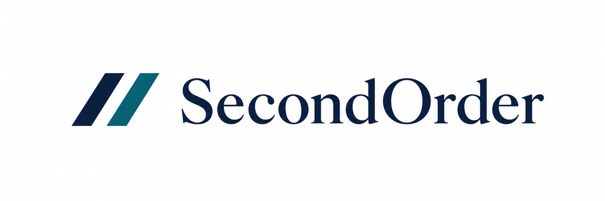

Simulation Learning Platform

Practice decision-making under uncertainty across governance, business, economics, geopolitics, and strategy.
You will not get simple win-or-lose outcomes. Each decision creates second-order effects: stakeholder reactions, market pressure, institutional constraints, public confidence, execution risk, and delayed consequences.
What This App Does
Scenario dashboardTracks the status variables that matter in the selected case.
Scenario MCQsLets you choose controlled strategic options while the simulator models second-order effects.
Real-world consequencesModels trade-offs, stakeholder incentives, resource limits, and delayed second-order effects.